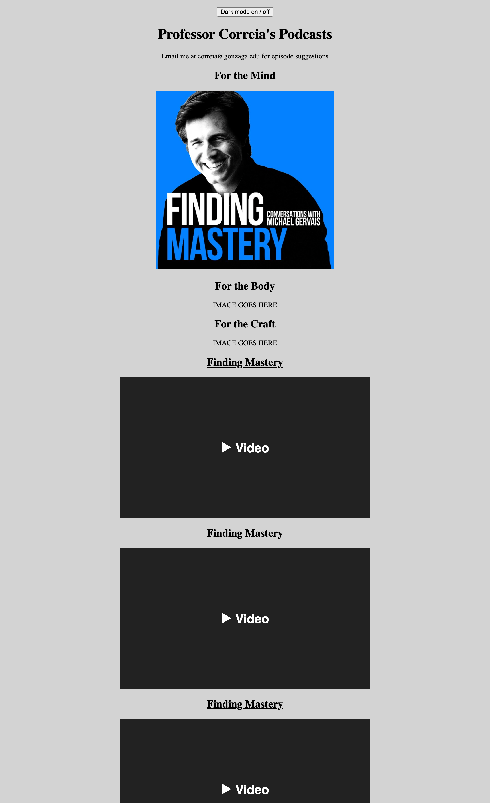
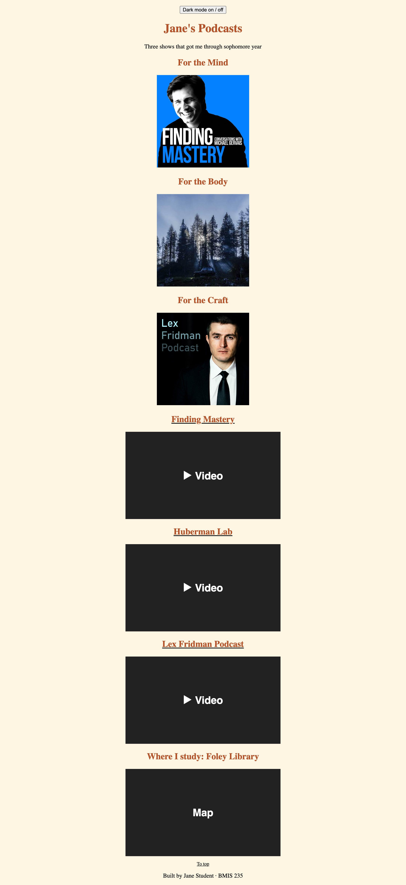

HTML-2
Embedding: Mind, Body, Craft
Bring images, videos and a business tool into a page. See the difference between content you host and content you borrow, and make the page run a little code.
Get this assignment
- Click the button, then Create a new repository.
Button shows a 404? This assignment hasn't been released yet.
- Repository name:
bmis235-html-2(exactly this). Set it to Public. - In your new repo, go to Settings → Pages. Under Build and deployment, choose Deploy from a branch, pick main and / (root), then click Save.
- After 1–2 minutes, open
https://YOUR-GITHUB-USERNAME.github.io/bmis235-html-2/. The Mind section works. Body and Craft say "IMAGE GOES HERE" and show the wrong video.
Starter files in your repo: index.html, gervais.jpg, huberman.jpg, fridman.jpg, README.md
Seeing a 404 on your live link? Wait up to 5 minutes. Settings → Pages says Your site is live when it's ready.
Before and After


The page: Mind, Body, Craft
The starter page has three podcast sections. Each one teaches a different way of bringing content into a page. Mind is finished. Use it as your model for the other two.
| Section | Podcast | Menu image | Video | What it teaches |
|---|---|---|---|---|
| Mind | Finding Mastery | gervais.jpg, uploaded ✓ | Works ✓ | An image you host, a video you borrow, a jump link |
| Body | Huberman Lab | An image from an outside web address (https://...) | Fix the title, channel link and video | An image you borrow |
| Craft | Lex Fridman Podcast | fridman.jpg, already uploaded | Fix the title, channel link and video | Then one business embed below it: a map, a form or a dashboard |
The links you need:
| Section | Jump id | Channel link | Embed link (goes in the video's src) |
|---|---|---|---|
| Body | huberman | https://www.youtube.com/@hubermanlab | https://www.youtube.com/embed/pq6WHJzOkno |
| Craft | fridman | https://www.youtube.com/@lexfridman | https://www.youtube.com/embed/kFQUDCgMjRc |
Hosted vs borrowed
Hosted content is a file in your repo, like gervais.jpg. It stays put. It only changes when you change it.
Borrowed content comes from someone else's site every time your page loads: a linked image, a YouTube video, a map. It's quick to add, but the other site is in charge. If they move, change or delete it, your page changes too. Companies do this all the time, and they check their pages for exactly that reason.
How embedding works
<img src="...">puts a picture on the page. Thesrccan be a file in your repo (gervais.jpg) or a full web address (https://.../photo.jpg).<iframe src="...">puts a whole other web page inside yours, in a box. That's how YouTube videos, Google Maps, Google Forms and Tableau dashboards show up on other sites. You almost never write an iframe by hand. The other site gives you the code and you paste it.
How the jump links work
The Mind image is wrapped in a link that points to an id:
<a href="#findingmastery"><img src="gervais.jpg" ...></a>Further down, right before the video, is the matching spot it jumps to:
<a id="findingmastery"></a>The # name in the link must match the id exactly. The Body and Craft links already point to #huberman and #fridman. Find where their ids are blank.
What's a script?
The button at the top of the page runs a tiny program, called a script, that swaps the page colors when you click it. The code sits in a <script> block right under the button. Look for the comment // change these two colors. Those two values are the only part you need to touch.
What to do
- Body: replace
IMAGE GOES HEREwith an image linked from an outside web address, with alt text. Not an uploaded file.2 pts - Body and Craft: fix the id, the title, the channel link and the video for each one, so both match their podcast.2 pts
- Craft: replace
IMAGE GOES HEREwith the uploadedfridman.jpg.1 pt - Paste one business embed in the marked spot under Craft: a Google Map, a Google Form or a Tableau Public dashboard. Change the heading to say what it is.2 pts
- Change the two colors in the dark mode script to your own. Both modes must stay readable.1 pt
- Change the
<title>so the tab shows your name, and change the page's heading colors to your own scheme.1 pt - Submit a working GitHub Pages link.1 pt
Steps
- Open your live page. Click the Mind image, then the Mind title. Click the dark mode button. Notice what works.
- Open
index.htmlwith the pencil. Read the comments. Each section is labeled. - Fix Body: find the blank
id="", the channel link, the title and the videosrc. Use the table above. Commit. - Fix Craft the same way. Commit.
- Add the Body image from an outside web address and the Craft image from
fridman.jpg. Copy the pattern from the Mind image. Commit. - Get your embed code (below), paste it in the marked spot, and change the heading. Commit.
- Change the two colors in the script and your title. Commit.
Finding an image on the web
- Find a photo you're allowed to use, for example on Wikipedia. Right-click it and choose Copy image address. The address usually ends in
.jpgor.png. - Paste it as the
src:<img src="https://upload.wikimedia.org/.../photo.jpg" width="400" alt="..."> - Broken icon? Some sites block other pages from using their images. That's not your code. Pick another image.
Finding embed code
- Google Maps: search for a place, click Share, then the Embed a map tab, then Copy HTML.
- Google Forms: open your form. At the top right, click the More menu (three dots), then Embed HTML, then Copy. On some screens the same code is under Send, in the
< >tab. - Tableau Public: open a dashboard, click Share under it, and copy the Embed Code.
Every one of these gives you code that starts with <iframe and ends with </iframe>. Paste the whole thing.
"Video unavailable"? Some owners block embedding. That's not your code. Pick another video.
YouTube Shorts: change youtube.com/shorts/ABC123 to youtube.com/embed/ABC123.
Make it yours
- Fill in the author comment at the top of every file with your name and GU username.
- Fill in
<meta name="author">with your name. - Fill in the footer: Built by YOUR NAME · BMIS 235.
- Make at least 3 commits with clear messages (not "Update index.html").
- Your outside image, your business embed and your two colors. Pick an embed you could imagine a real business using.
When you're stuck
- Say it in one sentence: "I expected ___, but I see ___."
- Pick one problem. Ignore the rest for now.
- Find the line. Which tag or file is it in?
- Search your one sentence (W3Schools, Google, YouTube).
- Change one thing, commit, check. Didn't work? Undo it and try the next idea.
"Nothing works" can't be searched. "My image shows a broken icon" can.
Submit
- Wait 1–2 minutes after your last commit.
- Open your live link and check that everything works, in both light and dark mode:
https://YOUR-GITHUB-USERNAME.github.io/bmis235-html-2/ - Paste that link into Canvas.
Rubric
| Criteria | Pts |
|---|---|
| Body: outside-linked image in the menu, with alt text | 2 |
| Body and Craft videos, titles and channel links fixed | 2 |
| Craft image added (uploaded file) | 1 |
| One business embed (map, form or dashboard) | 2 |
| Dark mode button uses your own two colors | 1 |
| Title shows your name, plus your own color scheme | 1 |
| Working GitHub Pages link | 1 |
| Total | 10 |